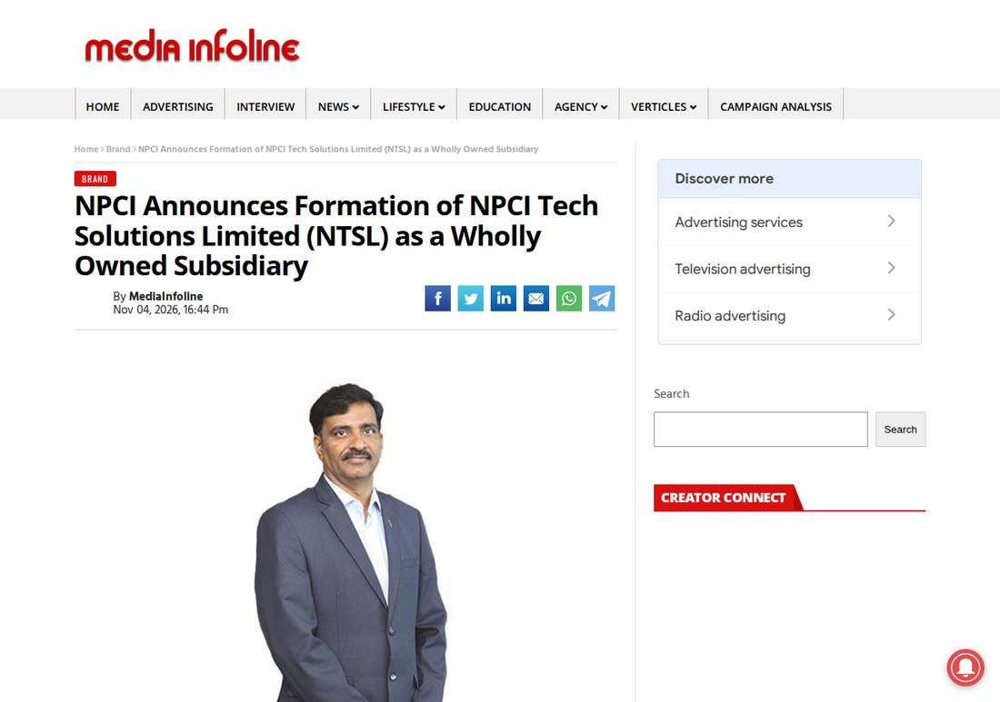

India's Payments Authority NPCI Spins Up AI and Blockchain Arm: NTSL, Its Fourth Subsidiary
India's payments authority NPCI has formed a wholly owned technology subsidiary, NPCI Tech Solutions Limited (NTSL), as its AI, blockchain, and digital-infrastructure arm, led by CTO Vishal Kanvaty. NTSL is the group's fourth subsidiary and will also serve digital public infrastructure programmes including eKYC Setu and the Unified Ticketing Platform. No product, budget, or launch date has been disclosed.
- 01THE FORMATION — NPCI sets up NPCI Tech Solutions Limited (NTSL) as a wholly owned subsidiary and its technology and innovation arm.
- 02THE CONFIRMATION — Reuters and NPCI's own announcement agree on the mandate (AI, blockchain, digital financial infrastructure, global capability centre services) and on Kanvaty's appointment as managing director and chief executive officer.
- 03THE WATCHPOINT — The first NTSL-built service for a named digital public infrastructure programme, and whether NTSL offers services outside the NPCI group.
WHAT HAPPENEDWhat Happened
Reuters reported on November 4, 2026 that the National Payments Corporation of India (NPCI) has set up a wholly owned technology subsidiary, NPCI Tech Solutions Limited (NTSL), as its technology and innovation arm. The unit will focus on AI, blockchain, digital financial infrastructure, and global capability centre services.
NPCI's own announcement, carried by MediaInfoline on November 4, 2026, confirms the formation and adds detail: NTSL will build capabilities beyond NPCI's core payments mandate and provide technology services for eKYC Setu, the Unified Ticketing Platform, and other digital public infrastructure programmes. NPCI chief technology officer Vishal Kanvaty, associated with NPCI for nearly a decade, has been appointed managing director and chief executive officer of NTSL.
NPCI operates India's retail payments and settlement systems, including the Unified Payments Interface (UPI). NTSL is the group's fourth wholly owned subsidiary, after NPCI International Payments, NPCI Bharat BillPay, and NPCI BHIM Services. NPCI managing director and chief executive officer Dilip Asbe said advancements in AI and other emerging technologies are creating new possibilities across digital infrastructure and financial services, and that NTSL was established to focus on those opportunities.
WHY IT MATTERSA payments utility building its own AI arm, rather than buying one
NPCI is not a startup chasing a model release; it runs the rails underneath India's digital payments. Giving that mandate its own subsidiary, led by its own CTO, signals that NPCI wants AI and blockchain capability in-house, under its own governance, rather than rented from vendors deal by deal.
The structure matters for the same reason: a wholly owned subsidiary can hire, build, and sell technology services beyond the parent's core payments mandate, including to other digital public infrastructure programmes. Whether that becomes a real product engine or a holding structure depends on what NTSL actually ships, and nothing shipped has been announced yet.
WHY IT MATTERSThe watchpoint is the first NTSL-built service, not the incorporation
Formation announcements are cheap; the verifiable milestone is the first service NTSL delivers for eKYC Setu, the Unified Ticketing Platform, or another named programme, and whether any of it is offered outside the NPCI group. Until then, the honest read is narrow: India's payments operator has formally organized its AI and blockchain ambitions into a dedicated company, with its own chief executive, and the work programme is now a matter of record rather than speculation.
SIGNAL JUDGMENT — ANALYSISThe signal is institutional, not a product
Tokenta Signal's judgment: the signal here is institutional. The operator of UPI has put its AI and blockchain ambitions into a dedicated company with its own chief executive, which makes future AI-in-payments moves traceable to a single balance sheet and roadmap. But formation is not delivery: until NTSL ships a named service, this counts as organization, not capability.
WHAT REMAINS UNCERTAINWhat Remains Uncertain
EVIDENCEEvidence

Reuters' November 4, 2026 report was opened and verified directly (subsidiary name, wholly owned status, focus areas, Kanvaty appointment, fourth-subsidiary status). NPCI's own announcement, carried by MediaInfoline the same day, agrees on all of those facts and adds the eKYC Setu and Unified Ticketing Platform programme names.
PRIMARY SOURCESPrimary Sources
- Reuters report
https://www.reuters.com/world/india/indias-payments-authority-npci-forms-unit-push-into-ai-blockchain-tech-2026-11-04/ - NPCI announcement (carried by MediaInfoline)
https://www.mediainfoline.com/brand/npci-announces-formation-of-npci-tech-solutions-limited-ntsl-as-a-wholly-owned-subsidiary